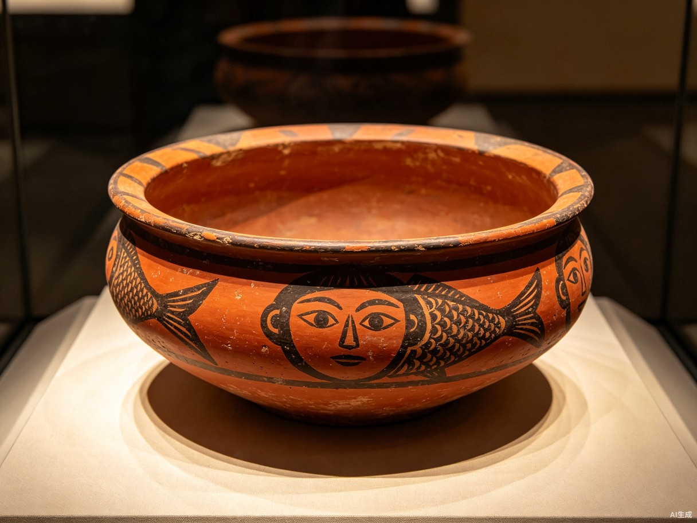
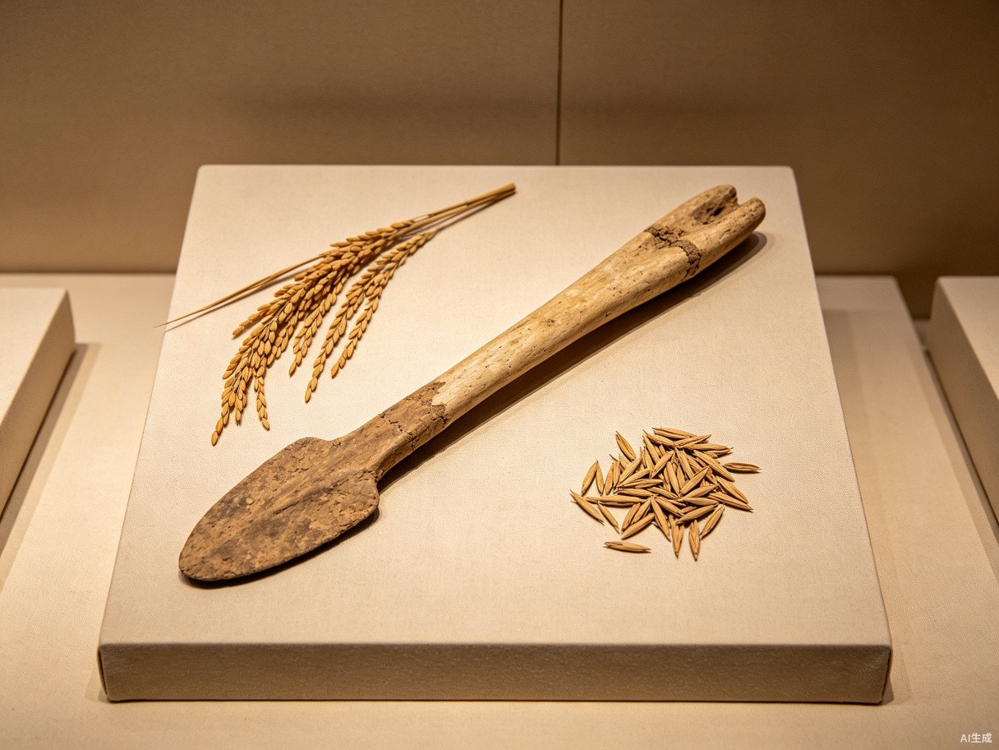

🎯 探究问题
先选一个你关心的问题。后面的例子、提示和AI学伴都会围绕这个问题来帮你推进。
👆 点击上方按钮查看问题
🎯 学习目标
- ✅ 知道半坡遗址和河姆渡遗址的位置和时间
- ✅ 了解半坡人和河姆渡人的农耕生活
- ✅ 理解新石器时代的标志（磨制石器、人工取火、陶器）
- ✅ 能对比半坡人与河姆渡人的异同
📝 前测：检验先备知识
难度递进： 基础 → 提高 → 挑战
1. 【⭐ 基础】半坡遗址位于哪里？基础
正确答案：A. 陕西西安半坡村
半坡遗址位于陕西省西安市半坡村，距今约6000年，是黄河流域原始农耕的代表。
| 名称 | 距今 | 地点 | 流域 |
|---|---|---|---|
| 半坡人 | ~6000年 | 陕西西安 | 黄河流域 |
| 河姆渡人 | ~7000年 | 浙江余姚 | 长江流域 |
📖 人教版七上 第6页
2. 【⭐ 基础】半坡人和河姆渡人处于什么时代？基础
正确答案：B. 新石器时代
半坡人和河姆渡人都处于新石器时代，标志是：磨制石器、人工取火、制作陶器、原始农耕。
3. 【⭐⭐ 提高】下列关于半坡人与河姆渡人的表述，正确的是？提高
正确答案：C. 半坡人种植粟，河姆渡人种植水稻
这是考试高频考点！必须记住：
- ✅ 半坡人：种植粟（小米），住半地穴式房屋
- ✅ 河姆渡人：种植水稻，住干栏式房屋
记忆口诀："半坡种粟住地下，河姆渡种稻住楼上"
考试陷阱：问"下列哪一组合适？"，选项经常把作物和房屋颠倒配对！
4. 【⭐⭐⭐ 挑战】新石器时代与旧石器时代的核心区别是？挑战
正确答案：C. 生产工具和获取食物方式
新石器时代的核心进步：
- ✅ 工具：打制石器 → 磨制石器
- ✅ 用火：天然火 → 人工取火
- ✅ 食物：采集狩猎 → 原始农耕
- ✅ 陶器：无陶器 → 制作陶器
| 项目 | 旧石器时代 | 新石器时代 |
|---|---|---|
| 工具 | 打制石器 | 磨制石器 |
| 用火 | 天然火 | 人工取火 |
| 食物来源 | 采集、狩猎 | 农耕、饲养 |
| 陶器 | 无 | 有 |
🏠 半坡人的农耕生活

图2-2 半坡人生活场景复原图（半地穴式房屋、陶器、粟）
📖 半坡人基本信息
- 时间：距今约6000年
- 地点：陕西西安半坡村（黄河流域）
- 作物：主要种植粟（小米）
- 房屋：居住在半地穴式房屋（一半在地下）
- 陶器：制作彩陶（人面鱼纹彩陶盆是代表）
半地穴式房屋：一半在地下，一半在地上，冬天保暖，夏天凉爽。体现了半坡人对自然环境的适应。
🌾 河姆渡人的农耕生活

图2-3 河姆渡人生活场景复原图（干栏式房屋、水稻、骨耜）
📖 河姆渡人基本信息
- 时间：距今约7000年
- 地点：浙江余姚河姆渡（长江流域）
- 作物：主要种植水稻（世界最早的水稻种植之一）
- 房屋：居住在干栏式房屋（悬空，防潮湿、防蛇虫）
- 工具：使用骨耜（用动物骨头制成）耕地
干栏式房屋：悬空建造，底部用木桩支撑，适合长江流域潮湿多雨的气候，可以防潮、防蛇虫、防洪水。
⚖️ 半坡人与河姆渡人对比
📊 全面对比
| 对比项目 | 半坡人 | 河姆渡人 |
|---|---|---|
| 距今时间 | 约6000年 | 约7000年 |
| 地理位置 | 陕西西安（黄河流域） | 浙江余姚（长江流域） |
| 主要作物 | 粟（小米） | 水稻 |
| 房屋类型 | 半地穴式 | 干栏式 |
| 陶器特点 | 彩陶（人面鱼纹） | 黑陶 |
| 代表工具 | 磨制石器 | 骨耜 |
这个对比表格是中考必考内容！必须熟记每个对比项，考试经常出选择题或填空题。
记忆口诀："半坡种粟住地下，河姆渡种稻住楼上；半坡彩陶鱼纹美，河姆渡黑陶骨耜耕。"
🌍 原始农耕的历史意义
- 食物稳定：从采集狩猎到农耕，获得了稳定的食物来源
- 定居生活：不需要逐水草而居，开始建造固定房屋
- 社会分工：出现了农业、手工业（制陶）、建筑业
- 文明起源：原始农耕是中华文明起源的重要基础
✅ 后测：检验学习成果
包含中考真题与高频考点分析，答错了会详细讲解错因！
1. 【⭐ 基础】河姆渡人种植的主要作物是？基础
正确答案：B. 水稻
河姆渡人生活在长江流域，气候温暖湿润，适合种植水稻。河姆渡遗址发现了世界上最早的人工栽培水稻遗迹之一。
2. 【⭐⭐ 提高·中考真题】（2023·陕西中考）下列关于半坡人的叙述，正确的是？提高 📝 中考真题
正确答案：C. 制作彩陶，有人面鱼纹彩陶盆
半坡人制作的彩陶非常著名，人面鱼纹彩陶盆是半坡文化的代表器物，现藏于中国国家博物馆。
来源：2023年陕西省中考历史卷 · 第2题（改编）
考点：半坡人与河姆渡人的区别 —— 作物、房屋、陶器
命题规律：中考常考查"下列哪一组合适？"，把作物、房屋、陶器颠倒配对！
3. 【⭐⭐⭐ 挑战·中考真题】（2022·浙江中考）干栏式房屋体现了河姆渡人对环境的适应，这种房屋适合哪种环境？挑战 📝 中考真题
正确答案：B. 潮湿多雨的气候
河姆渡人生活在长江流域，气候潮湿多雨。干栏式房屋悬空建造，可以：
- ✅ 防潮：地面潮湿，悬空可防潮
- ✅ 防蛇虫：蛇虫难以爬上木桩
- ✅ 防洪水：洪水来时可以不被淹没
来源：2022年浙江省中考历史卷 · 第4题（改编）
考点：原始居民房屋类型与自然环境的关系
4. 【⭐⭐⭐ 挑战·材料分析】阅读材料回答问题挑战 📋 材料题
根据材料，原始居民的房屋类型说明了什么？
正确答案：B. 说明原始居民能适应自然环境，因地制宜
材料通过对比半坡人和河姆渡人的房屋类型，说明了原始居民能根据当地的自然环境选择合适的房屋类型：
- ✅ 黄河流域（干燥）→ 半地穴式（保暖）
- ✅ 长江流域（潮湿）→ 干栏式（防潮）
这体现了中国古代因地制宜的智慧，也是人与自然和谐相处的早期例证。
- 先读材料：圈出关键词（"黄河流域""干燥""半地穴式"；"长江流域""潮湿""干栏式"）
- 再联系课本：回忆"因地制宜""适应自然"这些核心观点
- 排除绝对选项：带"最""完全""绝对"等绝对化词语的选项通常错误
材料分析题
阅读以下材料，回答问题：
材料：本课重点知识的实际应用案例（教师可替换为具体材料）
问题：结合材料和你所学知识，分析其中的关键概念。
开放性思考题
结合本课内容，谈谈你的理解和看法。
🎯 必考分析与考点总结
展开详细内容
必背表格：
| 项目 | 半坡人 | 河姆渡人 |
|---|---|---|
| 作物 | 粟（小米） | 水稻 |
| 房屋 | 半地穴式 | 干栏式 |
| 陶器 | 彩陶 | 黑陶 |
💡 记忆口诀："半坡种粟住地下，河姆渡种稻住楼上"
四大标志：
- ✅ 磨制石器（非打制）
- ✅ 人工取火（非天然火）
- ✅ 制作陶器
- ✅ 原始农耕（种植作物）
核心逻辑：房屋类型 → 适应当地气候 → 因地制宜的智慧
💡 考试常问"为什么河姆渡人住干栏式房屋？"答案：适应长江流域潮湿多雨的气候
记忆配对：
- ✅ 半坡人 → 黄河流域（陕西西安）
- ✅ 河姆渡人 → 长江流域（浙江余姚）
💡 考试常填图或选择题，问"下列哪个遗址位于黄河流域？"
| 题型 | 频率 | 考查方式 | 备考建议 |
|---|---|---|---|
| 选择题 | ★★★★★ | 对比半坡/河姆渡（作物/房屋/陶器） | 死记硬背对比表格 |
| 填空题 | ★★★☆☆ | 填作物名称/房屋类型/遗址位置 | 记住"粟/水稻""半地穴/干栏" |
| 材料题 | ★★☆☆☆ | 给一段文字，分析房屋与环境的关系 | 学会"因地制宜"的分析法 |